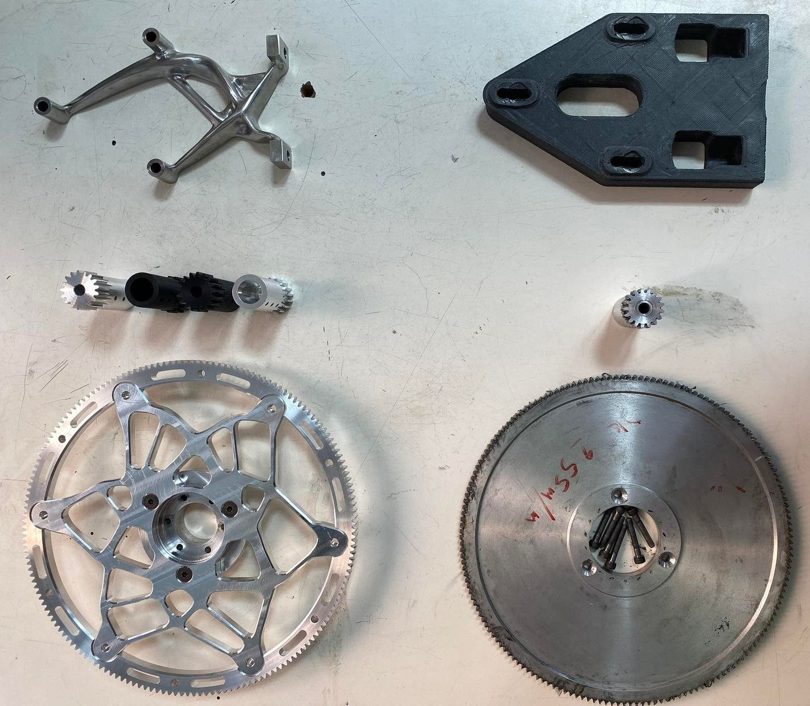
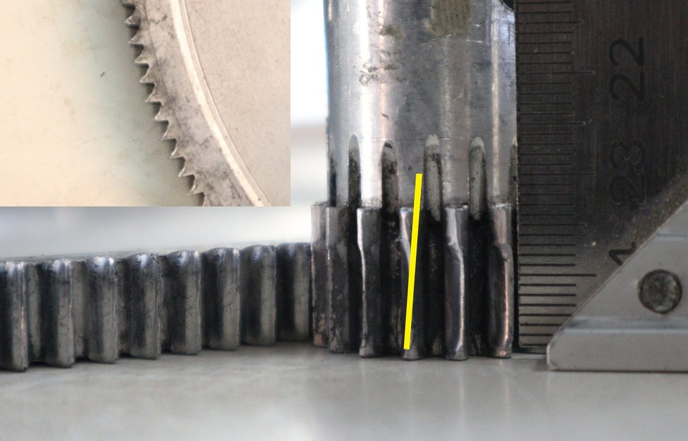
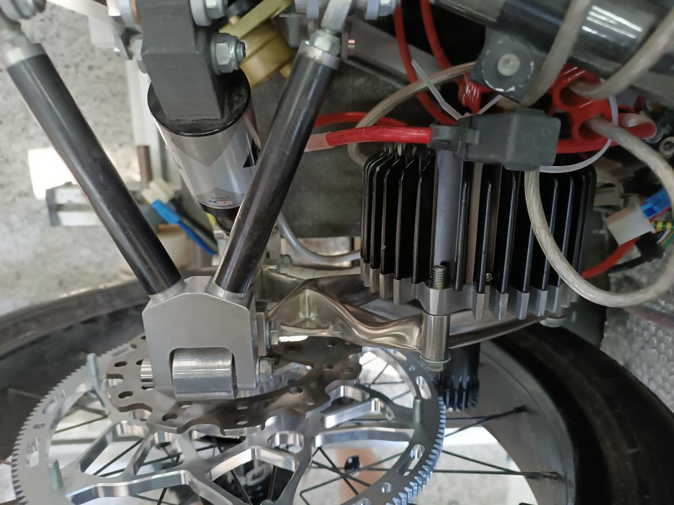
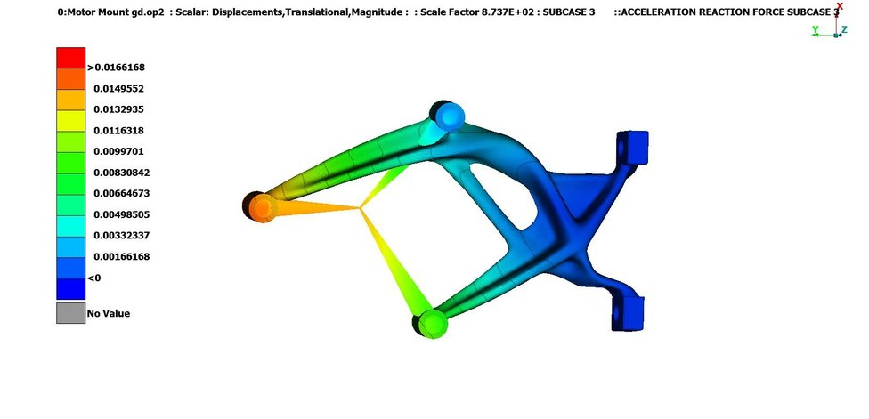
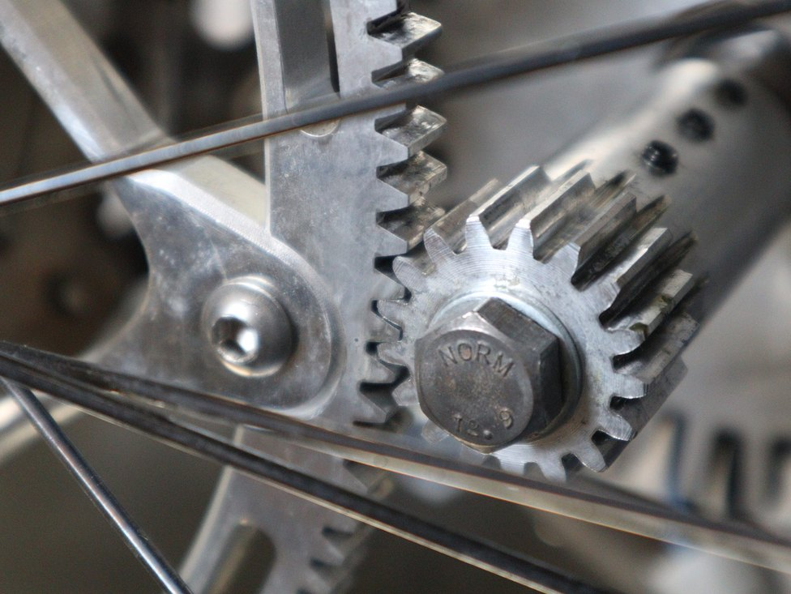

TUCer / Analysis & Design · Technical University of Crete
Transmission System Redesign.
A motor mount and driven gear developed using generative design, to fix a mesh-misalignment wear problem in TUCer's transmission — from root-cause diagnosis through post-race validation.

FIG. 01 — New vs. old motor mount, shaft, and driven gear
How the drive is arranged
The load path is short: motor, bracket, frame. That bracket is the only thing standing between the two, which makes it the single part setting both the gear centre distance and the parallelism of the shafts either side of the mesh. And the driven gear is overhung — carried on one side only, with no second bearing outboard of it.
Those two facts together are what turn mount stiffness into a transmission problem rather than a bracket problem. Supporting a gear on both sides would carry most of that tilt in its own bearings; in this overhung arrangement, deflection of the mount arrives at the mesh directly, as angular misalignment. Misalignment then concentrates tooth contact toward one end of the face instead of spreading it evenly across the full width — which is what the annotated photo below shows, the wear boundary running at an angle across the teeth rather than square to them. Accelerated wear and lost efficiency follow from there.
The original bracket was 3D-printed CF-PET-G, chosen for mass. That was the wrong objective for this part. Its only real job is to hold two shafts where the design put them, which is a stiffness requirement — and it had been optimised against something else.
Root cause
The team had observed wear on the transmission's gears and suspected the motor mount was flexing enough under load to matter. Given the arrangement above that was a reasonable place to look, but at that point it was still a hypothesis, not a diagnosis.
A computational simulation predicted mount deflection under the operating forces large enough to misalign the gears, consistent with the tooth-contact pattern in FIG. 02 — a hypothesis the analysis supported, rather than one the team was still guessing at.

Generative design & manufacturing

Both the motor mount and the driven gear were generative-designed in Fusion 360 against explicit targets — max stiffness, a safety factor of 2, a 0.5 kg mass limit and 1 mm max displacement for the mount, a stricter 0.27 kg limit for the gear — and validated in ANSA. The algorithm explored 74 gear candidates and 32 motor mount candidates before one design per component was selected for refinement.
The gear itself is a two-piece assembly: a 6061 aluminium hub with a bolt-on 7075 aluminium outer ring carrying the teeth. If a tooth is damaged, only the outer ring needs replacing — a serviceability decision, not just a mass one. Manufacturing was constrained accordingly: 2.5/3-axis CNC milling for the mount, a wider range of milling, cutting, and additive processes for the gear. Both parts were cut by Mosychlon, who still show them on their machining page.
Results
The redesigned driven gear cut mass by 56% (1,198.8 g → 523.1 g) and rotational inertia by 52%. The reported energy to accelerate it at 35 km/h falls from 63.0 J to 27.8 J.
The new motor mount — machined from stainless steel in place of 3D-printed carbon-fibre PETG — added 13% mass (438 g → 496 g), but cut peak simulated displacement under the acceleration load case by 91% (0.189 mm → 0.0166 mm), addressing the alignment problem at its source rather than its symptoms.
That stiffness was bought with stress margin, and the trade belongs in the result rather than out of it: peak stress in the same load case rose from 2.115 MPa to 8.08 MPa, up 282%. It was a judgement call and a comfortable one — 8.08 MPa sits far below AISI 304's ~215 MPa yield, so there was margin available to spend, and deflection was the failure mode that was actually costing the team gears.
The 13% mass was a debt, though, not an oversight. In 2024 the same component was re-attempted as a metal 3D print to pay it back — an attempt that failed, and taught more than this one did.

Validation

Inspected after a race, the new gear train showed no significant wear — real-world confirmation that fixing the alignment problem worked, not just a simulated prediction.
Quantifying the transmission-level efficiency gain precisely is difficult without a completed back-to-back powertrain test, which wasn't finished. The team's own estimate is that the alignment improvement is worth an additional ~10% efficiency — stated here as that: an estimate with no published derivation, not a measured result.